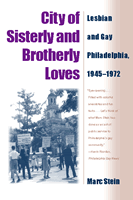

<body bgcolor="#FFFFFF" text="#000000" link="#0000FF" vlink="#CC0000" alink="#CC0000"><center><hr width="350" size="1" align="center" noshade>A path-breaking history of the vibrant Philadelphia lesbian and gay community<hr width="350" size="1" align="center" noshade><p><a href="https://cdcshoppingcart.uchicago.edu/Cart/ChicagoBook.aspx?ISBN=9781592131303&&PRESS=temple" target="_top">Buy this book!</a> | <a href="https://cdcshoppingcart.uchicago.edu/Cart/Cart.aspx?PRESS=temple" target="_top">View Cart</a> | <a href="https://cdcshoppingcart.uchicago.edu/Cart/Cart.aspx?PRESS=temple" target="_top">Check Out</a></p><p></p></center><!--none//--><h1>City of Sisterly and Brotherly Loves</h1>
<H2>Lesbian and Gay Philadelphia, 1945-1972</H2>
<h3>Marc Stein</h3>
<P>paper 1-59213-130-1 $29.95, Aug 04, <FONT COLOR=#990033>Available</FONT>
<br>Electronic Book 1-43991-176-2 $28.95 <FONT COLOR=#990033></FONT>
<BR> 480 pp
6x9
</P><BLOCKQUOTE><I>"Important and provocative, this book persuasively demonstrates that lesbian and gay history is central to understanding twentieth-century urban culture. And it rejects mere celebration for a more profound scrutiny that balances liberal against conservative aspects of the historical challenge to heterosexism."</i>
<br>&#151<b>Martin Duberman</b>, author of <i>Stonewall</i><i></I></BLOCKQUOTE>
<p>Marc Stein's <i>City of Sisterly and Brotherly Loves</i> is refreshing for at least two reasons: it centers on a city that is not generally associated with a vibrant gay and lesbian culture, and it shows that a community was forming long before the Stonewall rebellion. In this lively and well received book, Marc Stein brings to life the neighborhood bars and clubs where people gathered and the political issues that rallied the community. He reminds us that Philadelphians were leaders in the national gay and lesbian movement and, in doing so, suggests that New York and San Francisco have for too long obscured the contributions of other cities to gay culture.
<BR>&nbsp;<h2>Excerpt</h2><P>Excerpt available at <a href="http://www.temple.edu/tempress">www.temple.edu/tempress</a></p>
<BR>&nbsp;<h2>Reviews</h2>
<p><i>"By leaving behind the gay meccas of New York and San Francisco and training his gaze on Philadelphia, Stein has produced a gay and lesbian history that startles and informs."</i>
<br>&#151<b>John D'Emilio</b>, author of <i>Sexual Politics, Sexual Communities</i>
<p><i>"Eye-opening, often entertaining....Filled with colorful anecdotes and fun facts....Let's think of what Marc Stein has done as an act of public service to Philadelphia's gay community."</i>
<br>&#151<b>Kevin Riordan</b>, <i>Philadelphia Gay News</i>
<p><i>"Philadelphians should be proud of the courage and creativity with which their lesbian and gay fellow citizens coped with and fought oppression in the Cradle of Liberty, and Stein can clearly be proud of his pioneering book."</i>
<br>&#151<b>Doug Ireland</b>, <i>Philadelphia Inquirer</i>
<BR>&nbsp;<h2>Contents</h2><P>
<p>Preface to the Paperback Edition
<br>Acknowledgments
<br>Introduction
<p><b>Part I. Everyday Geographies, 1945-1972</b>
<br>1. Your Place or Mine?: Residential Zones in the "City of Neighborhoods"
<br>2. "No-Man's-Land": Commercial Districts in the "Quaker City"
<br>3. The Death and Life of Public Space in the "Private City"
<p><b>Part II. Public Cultures, 1945-1960</b>
<br>4. "The Most Fabulous Faggot in the Land"
<br>5. The "Objectionable" Walt Whitman Bridge
<br>6. Rizzo's Raiders and Beaten Beats
<p><b>Part III. Political Movements, 1960-1969</b>
<br>7. "Come Out! Come Out! Wherever You Are!" 1960
<br>8. "Earnestly Seeking Respectability," 1960-1963
<br>9. "News for 'Queers' and Fiction for 'Perverts,'" 1963-1967
<br>10. "The Masculine-Feminine Mystique," 1967-1969
<p><b>Part IV. Twin Revolutions? 1969-1972</b>
<br>11. "Turning Points," 1969-1970
<br>12. Gay Liberation in the "Birthplace of the Nation," 1970-1971
<br>13. Radicalesbian Feminism in "Fillydykia," 1971-1972
<p>Conclusion: Sexual Pride, Sexual Conservatism
<br>Abbreviations
<br>Notes
<br>Index
</P><BR>&nbsp;<H2>About the Author(s)</H2>
<table><tr><td valign="top"><img src="/tempress/authors/1774_au.gif" height="90" width="75"></td><td width="100%" valign="middle"><p><b>Marc Stein</b> is the former editor of <i>Gay Community News</i> in Boston and currently Associate Professor in the Department of History, York University.</P></td></tr></table>
<BR><H2>Subject Categories</H2>
<p><A HREF="/tempress/sexual.html" TARGET="_top">Sexuality Studies/Sexual Identity</a>
<BR><A HREF="/tempress/history.html" TARGET="_top">History</a>
<BR><A HREF="/tempress/philly.html" TARGET="_top">Philadelphia Region</a>
</p>
<p align="center"><a href="https://cdcshoppingcart.uchicago.edu/Cart/ChicagoBook.aspx?ISBN=9781592131303&&PRESS=temple" target="_top">Buy this book!</a> | <a href="https://cdcshoppingcart.uchicago.edu/Cart/Cart.aspx?PRESS=temple" target="_top">View Cart</a> | <a href="https://cdcshoppingcart.uchicago.edu/Cart/Cart.aspx?PRESS=temple" target="_top">Check Out</a></p><p><font face="Arial" size="1"><a href="copyright.html" onMouseOver="window.status='Web Copyright Policy';return true;" onMouseOut="window.status=''" title="Web Copyright Policy">&copy;</a> 2015 <a href="http://www.temple.edu" target="new" onMouseOver="window.status='Link to Temple University home page';return true;" onMouseOut="window.status=''" title="Link to Temple University home page">Temple University</a>. All Rights Reserved. http://www.temple.edu/tempress/titles/1774_reg.html</font></p>